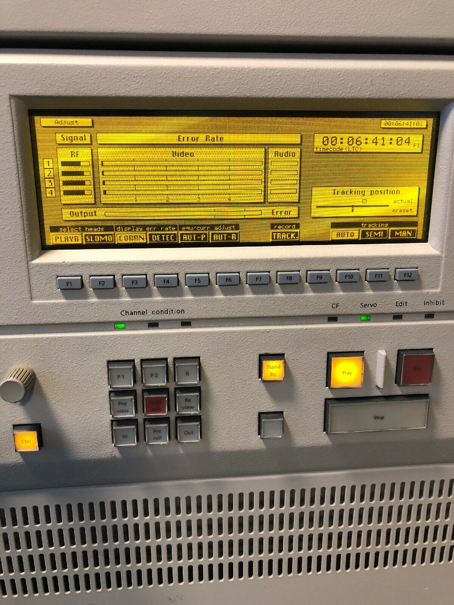
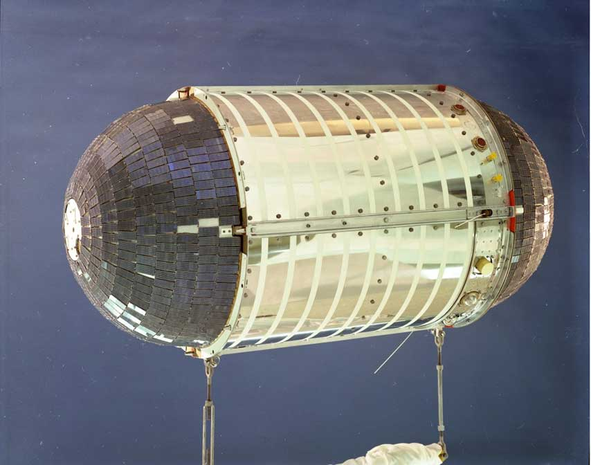

Pelo seu esforço para revolucionar a física do espaço-tempo e/ou medicina e/ou tecnologias, você foi contratado pela DREAMS Corporation. Se ainda não possui uma conta de e-mail no nosso servidor por favor registre-se agora. A DREAMS Corporation deseja sorte nas suas pesquisas!
1962 - O mundo completamente mergulhado em uma guerra fria a DREAMS Corporation é fundada por [REMOVIDO POR ORDENS ECHELON]. A DREAMS Corporation começou a investigar várias tecnologias teóricas, tais como teletransporte, produção de energia por fusão nuclear e claro Linhas-Do-Tempo paralelas e outros universos.
1969 - DREAMS Corporation expande-se para contratos militares com os Estados Unidos Da América.
1970 - DREAMS Corporation expande-se para produtos farmacêuticos com as suas novas tecnologias várias farmacêuticas fecharam as portas citando "As tecnologias da DREAMS Corporation parecem ter vindo de outro [REMOVIDO POR ORDENS ECHELON]".
1974 - DREAMS Corporation faz o seu primeiro porta-aviões a pedido da Aliança NATO.
O Dreaming Carrier ainda está em serviço mesmo no ano 20-!
1977 - DREAMS Corporation expande-se para a informática fazendo computadores de alto sucesso devido há nova [REMOVIDO POR ORDENS ECHELON].
O DEC-20 (DREAMS Ergomatic Computer Series 20) foi o primeiro computador "Portátil" com 500 MBs de espaço de disco, 8 MBs de RAM, e um processador de 800 MHz! E com essa capacidade era utilizado para tudo até para transmissão de programas em direto na televisão!
1978 - DREAMS Corporation faz a IIN (International Information Network) a primeira rede de computadores internacionais da história.
1980 - DREAMS Corporation lança o seu primeiro satélite na órbita da terra.
O Dreaming Satellite foi só um satélite teste mas marcou uma data muito especial para a DREAMS Corporation.
1981 - DREAMS Corporation confirma a existência de [REMOVIDO POR ORDENS ECHELON]
1982 - DREAMS Corporation faz o primeiro reator de fusão nuclear viável.
O reator continua a ser utilizado em [REMOVIDO POR ORDENS ECHELON]
1986 - DREAMS Corporation evita um novo surto de [REMOVIDO POR ORDENS ECHELON] ganhando a confiança da Organização Mundial de Saúde.
1992 - Desastre, um ano para ser lembrado, Old Dehli, Índia é destruída por uma arma termonuclear lançada por terroristas paquistaneses. A Organização das Nações Unidas pede há DREAMS Corporation que dê uma solução para terrorismo nuclear. A empresa recebe carta branca.
1993 - SWISSKNIFE-1 é lançado, o satélite contem um laser para parar ataques nucleares sem permissão e instrumentos que descobrem [REMOVIDO POR ORDENS ECHELON].
1994 - 20- - A DREAMS Corporation está neste momento a fazer uma rede conectada de satélites.
A rede esta a ser criada devido há [REMOVIDO POR ORDENS ECHELON], nós não temos muito [REMOVIDO POR ORDENS ECHELON]. [O RESTO DO TEXTO FOI REMOVIDO POR ORDENS ECHELON]
Atenção: Este servidor e domínio são considerados de prioridade ECHELON. Toda a informação é considerada CLASSIFICADA e só para OLHOS AUTORIZADOS. TODAS AS AÇÕES ESTÃO A SER GUARDADAS PARA INSPEÇÕES PERIÓDICAS REGULARES. Qualquer acesso não autorizado será PUNIDO.